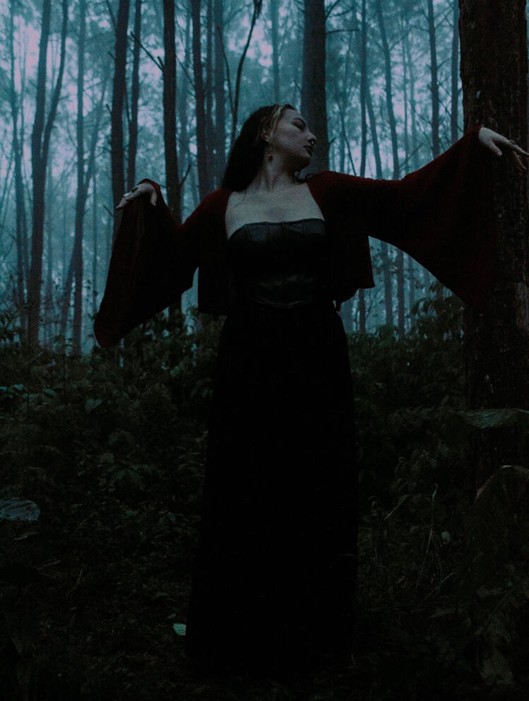

// Localizador Sombrio | Paraná
Explore o underground Paranaense: Encontre lojas, estúdios de tatuagem, cabeleireiros e eventos com a temática Gótica na região.
// Galeria | Ecos Visuais



// Tutorial | Maquiagem Gótica
Aprenda as técnicas essenciais para criar um visual gótico clássico com um tutorial completo do YouTube.
Este tutorial foca em olhos esfumados, lábios escuros e contorno dramático, elementos chaves do visual gótico tradicional.